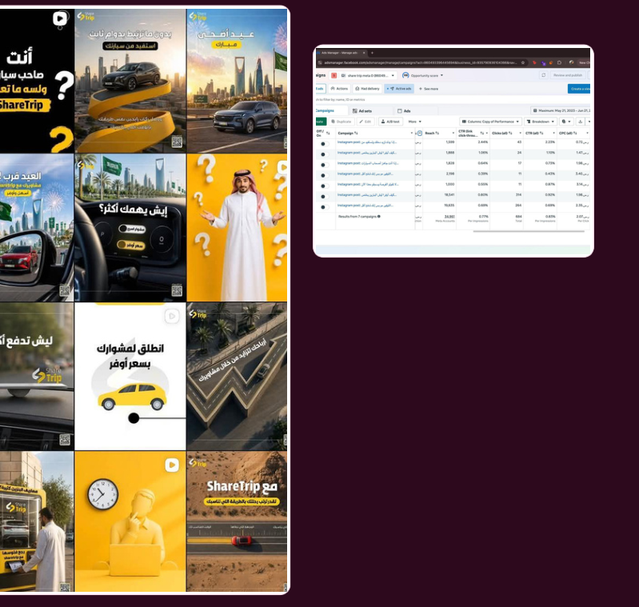

← All projects / Case Study 04
Awareness content
ShareTrip
Developing content angles, posts and captions for a travel-related account, focusing on awareness messaging.
MY ROLEContent ideas, captions, copy and awareness angles.

Visual work and campaign screenshots reproduced from my portfolio (page 8). Visual design may have been completed by collaborators.
THE WORK
What I worked on
Developing content angles, posts and captions for a travel-related account, focusing on awareness messaging.
Deliverables
Content ideas, captions, copy and awareness angles.
SCOPE & RESULTS
The evidence
34,961 reach · 684 clicks · 0.83% CTR · 0→986 followers
Figures are reported in the supplied portfolio. They reflect campaign/account performance, not copywriting-only attribution.